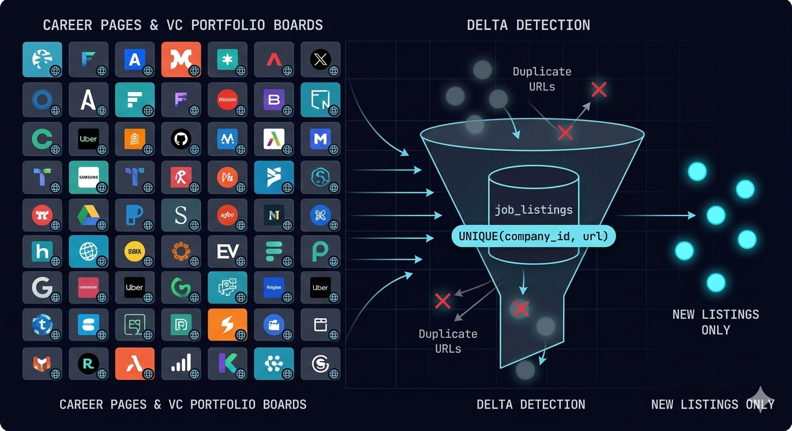
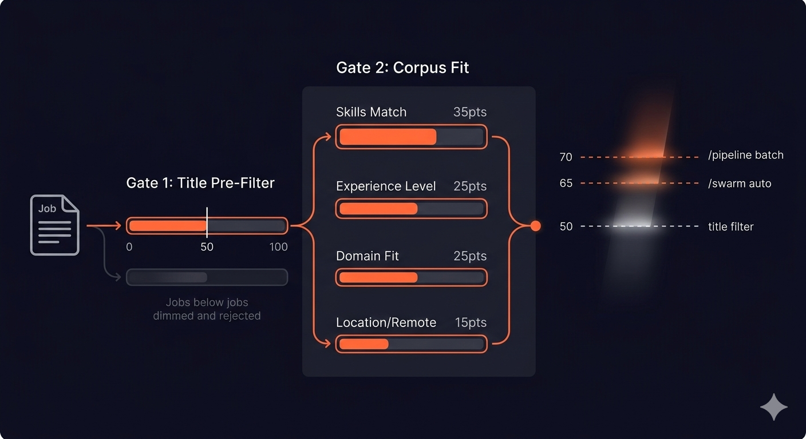
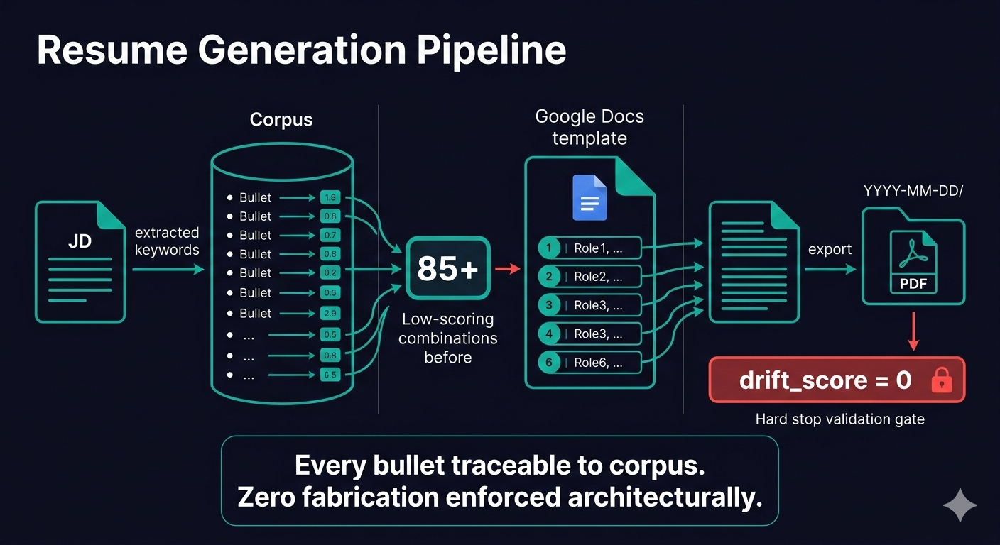
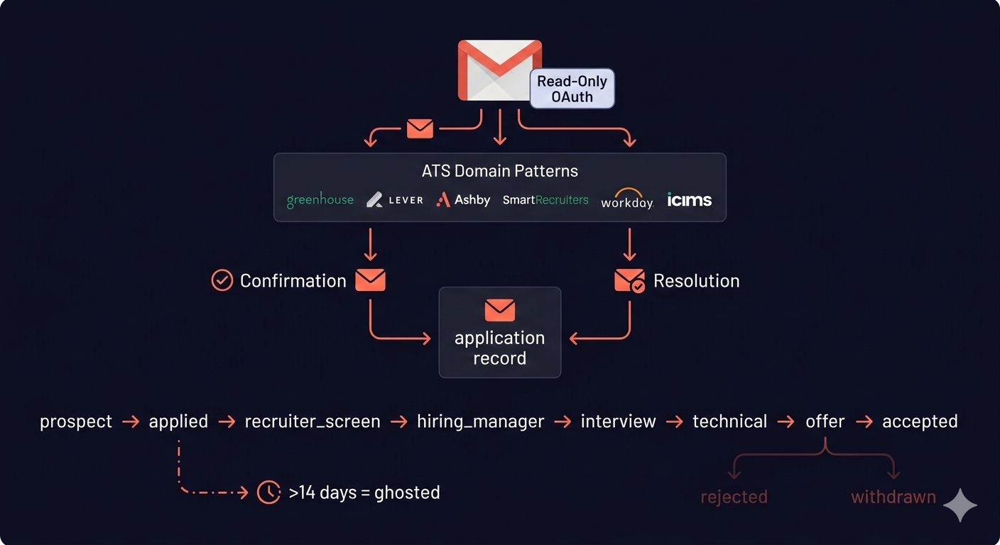
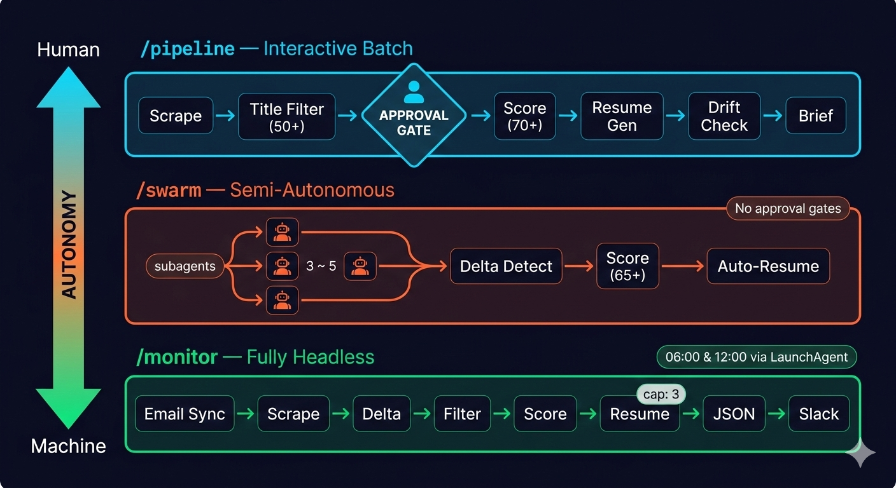
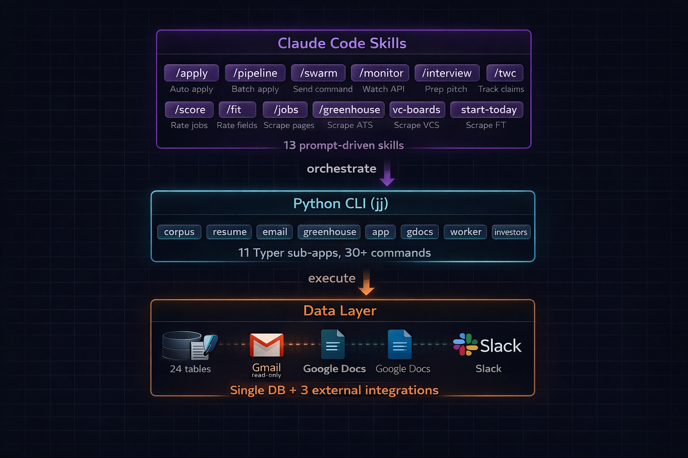
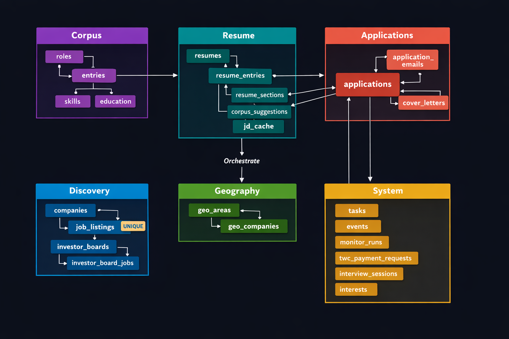

Job hunting is a full-time job.
So I automated mine.
One product manager. No team. I built a system that finds open roles before I wake up, scores them against my real experience, generates tailored resumes, reads the responses, and sends me a Slack message with the results.
Before the system can select,
it needs something real to select from.
Most AI resume tools generate content on the fly — and you have no idea if what they wrote is accurate. This system takes a different approach: before anything else happens, you sit down with an AI interviewer that walks through your career role by role, mining real accomplishments, confirming the phrasing sounds like you, and building a verified library of resume bullets. That library — the corpus — is the single source of truth for every resume the system will ever create.
- Guided conversation walks through each role in your career
- Probes for specifics: "What did you ship?", "What metrics did you move?", "What was broken that you fixed?"
- Drafts each bullet and confirms it sounds like you — not like a template
- Captures voice preferences: words you use, words you avoid
- Targets 8-15 verified bullets per role
- Roles with context: company, team, situation when you joined
- Tagged accomplishment bullets with metrics and evidence
- Skills linked to specific entries as proof
- Personal interest hooks for cover letter openers
- A voice profile that ensures every resume sounds like you
Most people check job boards.
This system checks career pages directly.
Every day, the engine scans 50+ company career pages and VC portfolio boards for new openings. It remembers every job it has ever seen, so it only surfaces what is genuinely new. No duplicates, no noise — just fresh listings that were not there yesterday.

- Direct career pages for 50+ target companies
- VC portfolio boards (a16z, Greylock, YC, General Catalyst...)
- Greenhouse applicant tracking portals
- Investor talent networks
- Every listing URL is stored with its company — duplicates are automatically rejected
- Only new listings get scored — repeat scans skip everything already seen
- Tracks when each company was last checked and how often
- Runs are fast because they only process what has changed
Every job scored 0–100.
No gut feelings. No wasted applications.
People spend hours reading job descriptions and guessing if they are a fit. This system scores every listing against real work history in seconds. Two filters ensure only strong matches get through: a quick title check to weed out irrelevant roles, then a deep four-category analysis of the full job description. Only high-scoring jobs get resumes.

AI writes most resumes.
This one only selects from real work.
The hardest problem in AI-assisted job search is trust. Can you be sure the resume is accurate? This system solves it by refusing to write anything. Instead, it draws from a verified library of real accomplishments, ranks them for relevance against each job description, and assembles a tailored resume. A validation step blocks the entire document if any content cannot be traced back to the source library.

You applied. Then what?
The system reads the response.
After you apply, responses trickle in across days and weeks. This system monitors your inbox automatically, recognizing emails from hiring platforms like Greenhouse, Lever, Ashby, SmartRecruiters, Workday, and iCIMS. It knows the difference between a confirmation, a rejection, and an interview invite — and updates your application status accordingly. If a company confirms they received your application but goes silent for 14 days, the system flags it as ghosted.

- Recognizes emails from 6+ hiring platforms by domain pattern
- Keyword matching distinguishes between a rejection and an interview invite
- Confirmation signals: "received your application," "thank you for applying"
- Resolution signals: rejection language, interview scheduling, offer keywords
- Rejection email arrives → application marked as rejected
- Interview invite arrives → application moved to interview stage
- Confirmed but no response in 14 days → flagged as ghosted
- Each application gets one confirmation and one resolution — clean lifecycle
Choose your level of control.
Or let go entirely.
Some days you want to review every listing yourself. Other days you want the system to handle everything while you sleep. Three pipeline tiers let you choose: hands-on review when you want it, parallel agents for daily sweeps, or a fully autonomous engine that runs at 6 AM and noon — finding jobs, generating resumes, and notifying you on Slack, all without touching a keyboard.

Tell it what you need
in plain English. It handles the rest.
The system is designed in three clean layers. At the top, 13 AI-powered workflows understand natural language instructions — "find me PM roles at health-tech companies" or "generate resumes for today's top matches." These translate into a complete toolkit of 30+ specialized commands. Everything flows down to a database that tracks every company, every application, and every email response.

Every company. Every application.
Every response. All in one place.
The entire job search lives in a single database — organized into six logical groups that cover the full lifecycle. From building your work history, to generating resumes, to tracking applications, to discovering new roles, to geographic targeting, to system operations. Nothing falls through the cracks because nothing lives outside the system.
